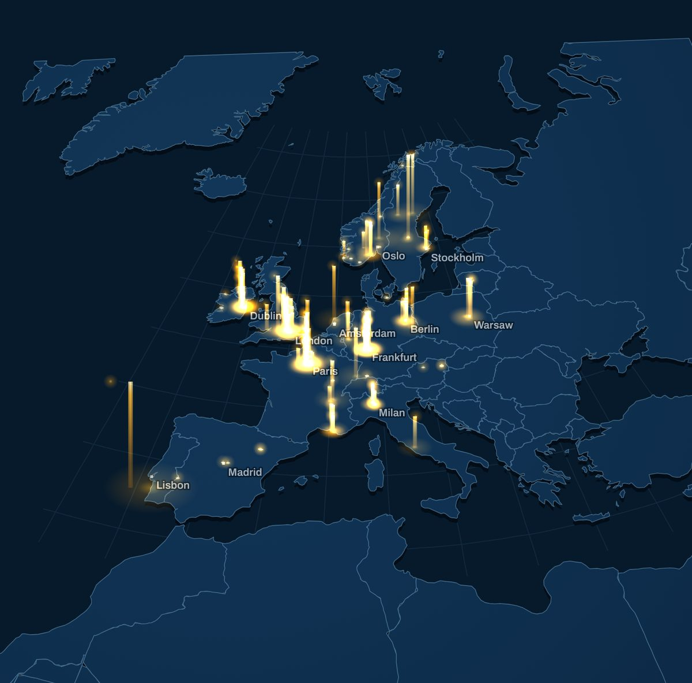
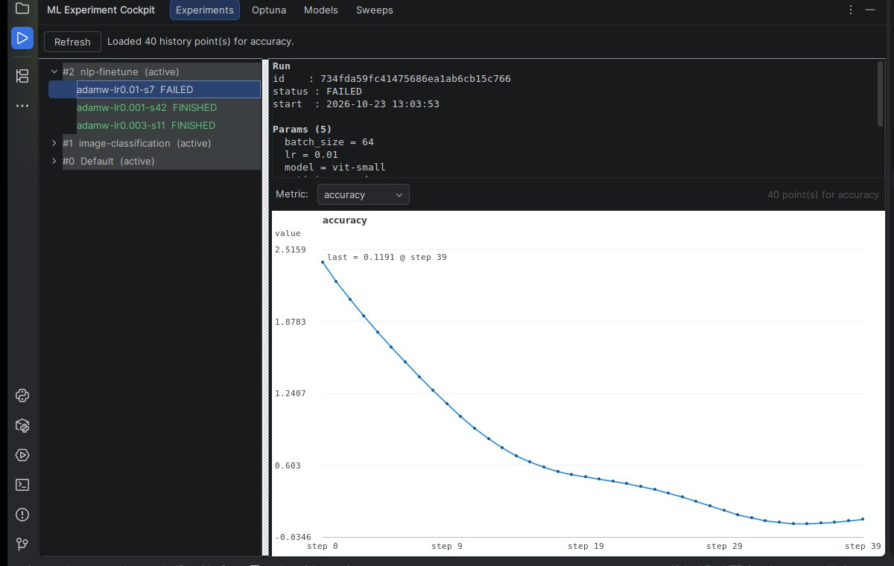
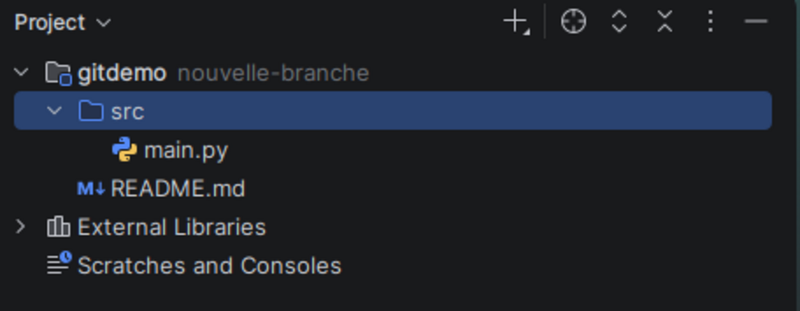
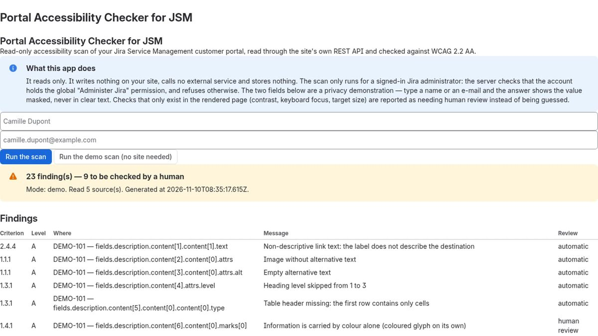

Data you can check. Tools you can read.
Tgg Labs is an independent studio in Switzerland. It turns public permits into Standby Atlas, a dataset of Europe's upcoming data centres, and builds small open-source tools for developers.

Standby Atlas
Europe's data-centre pipeline, down to the engine.
Every new data centre leaves public filings long before construction: emission permits for its backup generators, environmental opinions, planning decisions. Standby Atlas reads them in their original languages and turns them into records with the source attached: who applied, where, at what stage, how many generator sets and which engine make.
- Data-centre projects tracked
- 172in 14 countries
- Official documents behind them
- 178131 read page by page
- Backup generator sets declared
- 5,931
- Permits that name the exact engine model
- 15
Figures as of 10 November 2026, as published on standbyatlas.com.
Made for genset makers and distributors, fuel, power and cooling suppliers, grid operators and analysts, investors and lenders.
Visit standbyatlas.com Read a sample dossier
A free monthly summary is also published here: European Data Centre Pipeline Index.
Developer tools
Small tools that do one job. Each one reads your data where it already lives, and its source code is public.
-

ML Experiment Cockpit
MLflow runs and metrics, W&B sweeps, Optuna studies and the MLflow Model Registry, read inside PyCharm or IntelliJ, without a browser.
- Runs in
- JetBrains IDEs
- Price
- Free core features
- Licence
- Apache-2.0
-

Git Branch Badge
Shows the Git branch you are on next to the project name, and updates it the moment you switch, even from a terminal.
- Runs in
- JetBrains IDEs
- Price
- Free
- Licence
- MIT
-

Portal Accessibility Checker for JSM
Checks what a Jira Service Management customer portal shows its users against WCAG 2.2 AA, and flags what needs a human review.
- Runs in
- Jira Service Management (Atlassian Forge)
- Access
- Read-only, administrators
- Licence
- MIT
Templates and guides
Practical files for developers and small teams, sold at a fixed price on Gumroad. Each name opens a page that says what is inside and what is not.
| Product | What you get | Price | Where to buy |
|---|---|---|---|
| Claude Code Prompt Pack | 18 tested prompts for weekly work: refactoring, code review, flaky tests and more. | USD 9.00 | Buy on Gumroad |
| CI/CD & Automation Templates | 14 templates for GitHub Actions, GitLab CI and n8n: pull-request checks, releases, CodeQL, staging deploys. | CHF 12.00 | Buy on Gumroad |
| Python CLI Micro-Tools | 10 single-file scripts, standard library only, MIT: a CSV anonymiser, a log scanner, a JSON Schema validator and more. | CHF 8.00 | Buy on Gumroad |
| Dev Workflows Notion Pack | 6 Notion templates for developers and tech leads: a sprint board, 1:1 notes and more. | CHF 10.00 | Buy on Gumroad |
| Marketing Copy Templates | 12 Markdown templates for a landing-page hero, a cold email and the other texts you ship every week. | CHF 11.00 | Buy on Gumroad |
| Patterns Phaser pour jeux HTML5Written in French | A 34-page guide to shipping a Phaser 3.90 game on HTML5 portals, from first scene to publication. | CHF 14.00 | Buy on Gumroad |
Prices as listed on Gumroad on 11 November 2026.
How the studio works
Tgg Labs is the label under which Tgg, a developer based in Switzerland, publishes his work. Four rules apply to everything on this site.
Sources first
Every figure carries its date and its source. A number that was not measured is not published.
Read-only by default
The tools read data where it already lives. They change nothing in your systems and send nothing to anyone else.
Open source
The two plugins and the Atlassian app are published with their full source code, under Apache-2.0 or MIT.
Built with AI, checked by review
The work is done with AI agents. It is reviewed, and its claims checked, before it is published.